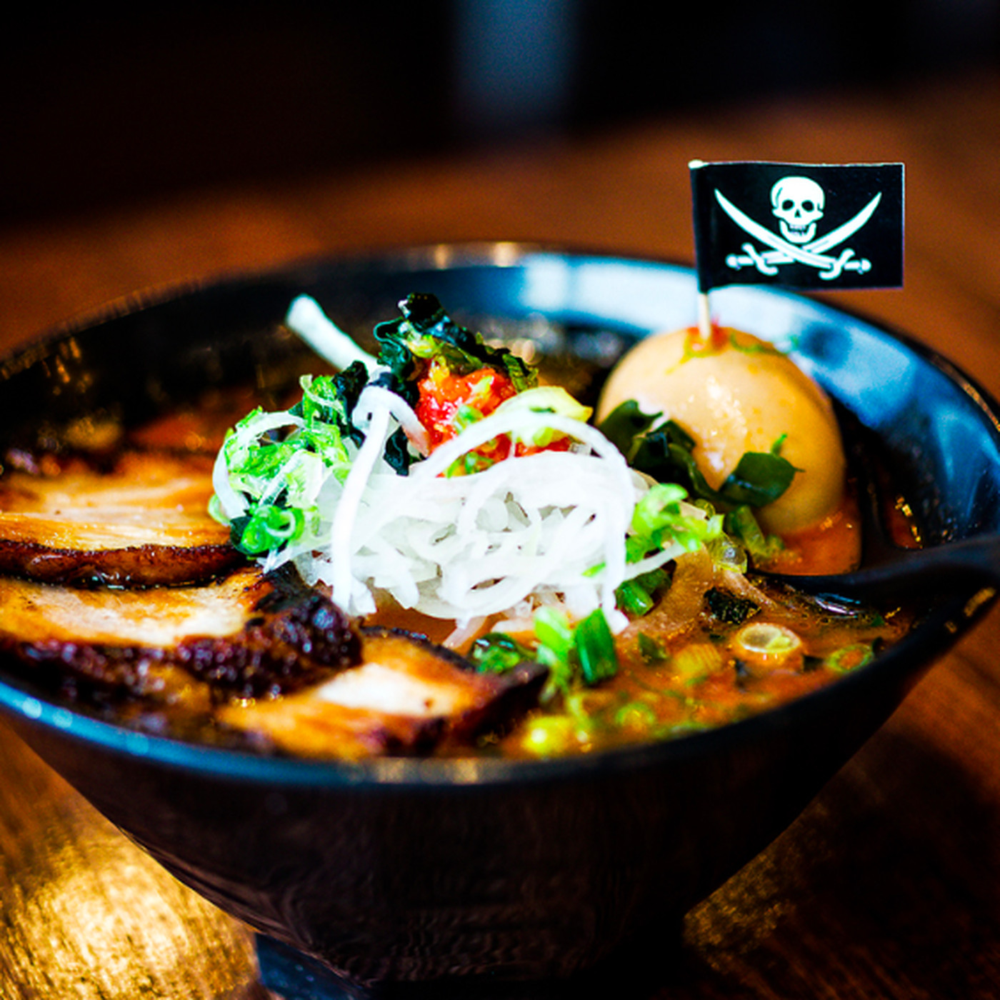

Fried Shrimp Bao buns and Honey Miso Ramen with fried shrimp
I consider KinNoTori Ramen Bar as the best Ramen spot in Atlanta. You will find them right across the street from Ponce City Market.
Their delicious large bowls of noodles, meat, and vegetables will leave you full and nourished. Compared to other ramen restaurants, KinNoTori is affordably priced and offers a menu with good variety. They can also accomodate most dietary restrictions, including options for vegetarians and vegans. If you decide to stop by, make sure to try my personal favorite appetizer, Bao buns (soft buns). You won't be disappointed!
Spicy Miso Ramen with pork belly